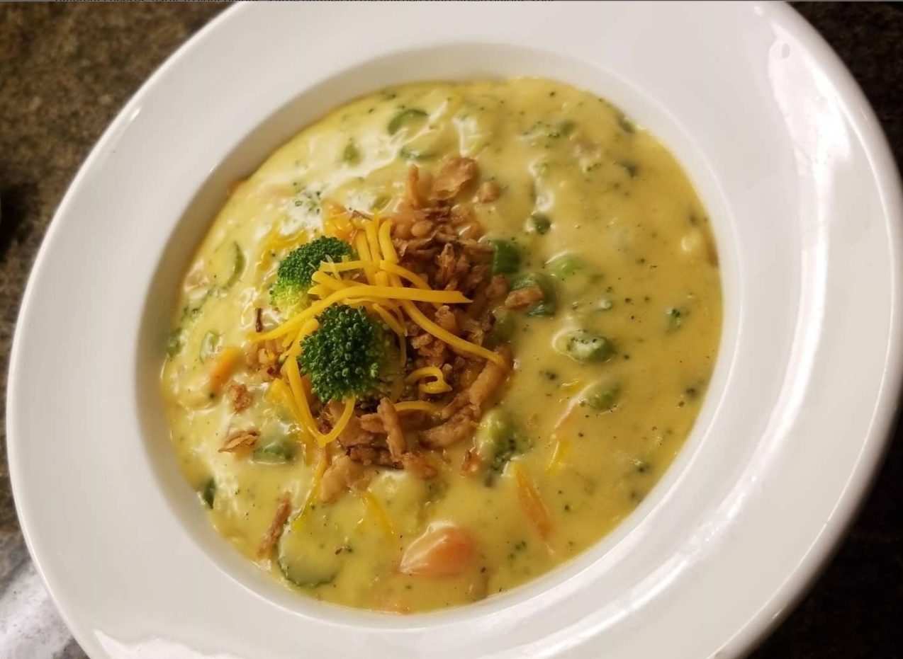

Broccoli Cheddar Soup

Description
My husband loves Panera® broccoli cheddar soup but it went up in price and therefore we set out on a hunt to create the perfect broccoli cheddar soup. Here is what we came up with. There are tons of variations and options to make this soup your own. You can add extra veggies, different cheeses, garlic to your onions, a little nutmeg to the finished soup, green onions, sour cream, etc. The list goes on and on. Make it your own! Serve topped with cheese!
Ingredients
- 1 tablespoon butter
- ½ onion, chopped
- ¼ cup melted butter
- ¼ cup flour
- 2 cups milk
- 2 cups chicken stock
- 1½ cups coarsely chopped broccoli florets
- 1 cup matchstick-cut carrots
- 1 stalk celery, thinly sliced
- 2½ cups shredded sharp Cheddar cheese
- salt and ground black pepper to taste
Steps
- Melt 1 tablespoon butter in a skillet over medium-high heat. Saute onion in hot butter until translucent, about 5 minutes. Set aside.
- Whisk 1/4 cup melted butter and flour together in a large saucepan over medium-low heat. Continue to whisk and cook , adding 1 to 2 tablespoons of milk if necessary to keep the flour from burning, 3 to 4 minutes.
- Gradually pour milk into flour mixture while whisking constantly. Stir chicken stock into milk mixture. Bring to a simmer; cook until mixture is thickened, about 20 minutes. Add broccoli, carrots, sauteed onion, and celery; simmer until vegetables are tender, about 20 minutes.
- Stir Cheddar cheese into vegetable mixture until cheese melts. Season with salt and pepper to taste.